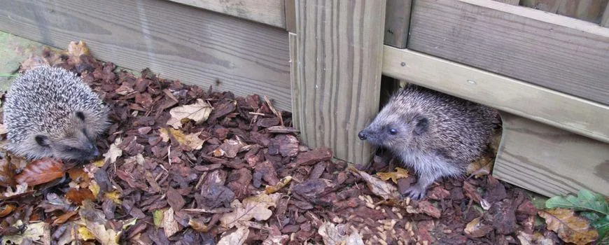
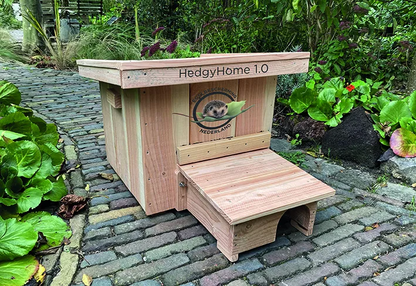
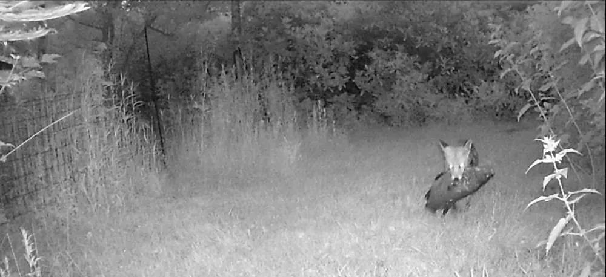
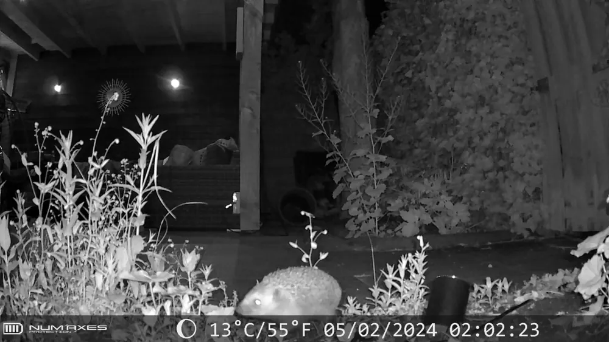

Bouw mee aan de egelsnelweg
Het leefgebied van de egel wordt steeds kleiner: struiken verdwijnen, tuinen worden strakker en steeds vaker omheind met een schutting. Daardoor belanden egels op straat, waar het gevaarlijk is.
Egels zoeken ’s nachts hun voedsel bij elkaar en leggen daarbij een tot vier kilometer af. Een schutting is voor hen een onneembare barrière, maar een opening van 15 bij 15 centimeter is al genoeg. Verbind je tuin met die van de buren en je hebt een egelsnelweg door de buurt.


Wij plaatsen gratis egelpoortjes, en als je zelf geen klusser bent helpen we graag bij het plaatsen.
Zes egelhuizen
Een egel heeft niet alleen een doorgang nodig, maar ook een veilige plek om te slapen, te overwinteren en jongen groot te brengen. Op 7 november 2026, tijdens de Natuurwerkdag, plaatsen we daarom zes HedgyHomes: stevige egelhuizen met een gangetje naar binnen, zodat katten en honden er niet bij kunnen. Ze komen in tuinen die er geschikt voor zijn: een rustige, beschutte hoek, liefst onder struiken of tegen een heg. De egelpoortjes en egelhuizen zijn aangeschaft met een subsidie van het Groenfonds van de Provincie Noord-Holland.

Wil je zo’n egelhuis in je tuin? Meld je aan. We komen kijken of de plek geschikt is, en als dat zo is plaatsen we het huis gratis.
Een egel in nood?
Een gezonde egel rolt zich op als je hem aanraakt. Doet hij dat niet, waggelt hij of loopt hij rondjes, zit hij onder de witte vliegeneitjes of maden, is hij door een hond gepakt of ergens in verstrikt geraakt, of loopt er rond half november nog een egeltje ter grootte van een tennisbal rond? Dan moet hij naar de opvang. Zie je een egel overdag rondlopen, hoest hij aanhoudend, of heb je per ongeluk een nest of een winterslaper verstoord? Bel dan even voor advies; meestal is er iets aan de hand, maar niet altijd.
De dichtstbijzijnde opvang is Vogel- en Zoogdierenopvang De Toevlucht, Bijlmerweide 1, Amsterdam-Zuidoost, telefoon 020-600 11 44. Op hun site lees je ook hoe je een egel het beste vervoert en wat je thuis wel en niet moet doen.
Wil je egels in je tuin helpen? Zet een lage schaal met water neer (nooit melk) en eventueel wat kattenbrokjes, vooral in september tot november en in maart en april, als ze het zwaar hebben. Gebruik geen slakkenkorrels en laat een rommelig hoekje met bladeren liggen.
Wat sluipt er door mijn tuin?
Wie weet eigenlijk wat er rondloopt als jij slaapt? In dit citizen-scienceproject onderzoeken bewoners met wildcamera’s welke zoogdieren ’s nachts door de tuinen trekken. Je laat een of twee weken een wildcamera in je achtertuin plaatsen; een ervaren vrijwilliger zorgt voor de installatie.
Arda van der Lee, die veel ervaring heeft met dit soort onderzoek: “Naast veel foto’s van de kat van de buren hopen we ook egels, muizen en misschien zelfs een vos of boommarter vast te leggen. We zijn benieuwd naar álle tuinen, groot en klein, midden in de bebouwde kom. Iedereen wordt nieuwsgierig, en kinderen zijn er helemaal weg van.”
Zo help je mee aan echt wetenschappelijk onderzoek. Deze actie wordt mogelijk gemaakt door het Buurtfonds van de Nationale Postcode Loterij.
De eerste vangsten
De camera’s draaien, en de eerste nachtelijke bezoekers zijn al vastgelegd: een vos met een wel heel grote karper in zijn bek, en een egel op het terras.


Meedoen
- Een gratis egelpoortje aanvragen: mail ons, of app Ron op 06-46293590. Coördinator van het egelproject is Martin Ockhuijsen.
- Een wildcamera in je tuin: mail ons.
- Een egelhuis (HedgyHome) in je tuin: mail ons, dan komen we kijken of je plek geschikt is.